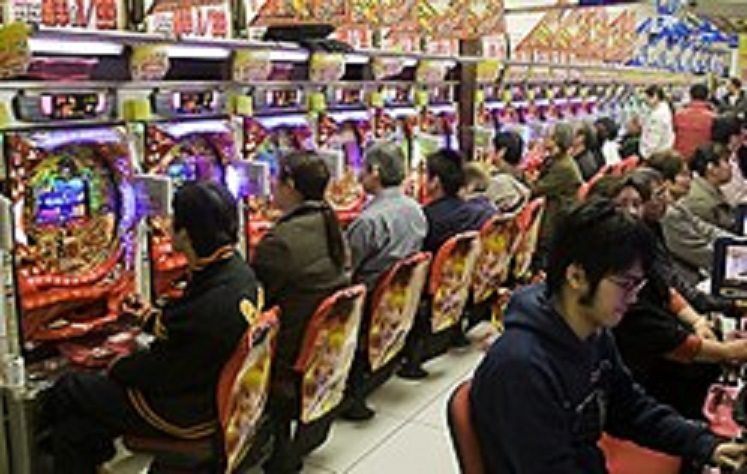

パチンコは、ハンドルをひねって玉を打ち出し、大当たりを狙う遊びです。 大当たりすればいっぱい玉が出ます。打ち出した以上に玉が戻って来れば勝ち。次の大当たりを引く前に玉がなくなってしまえば負けになります。 どれくらいの頻度で当たるのか、どれくらいの玉が出るのかは、機種によってかなり違います。 （ただ、打ち出しの速度に関しては１分間に最大１００発という規制があり、こちらは共通です） どんな風に遊びたいかによって、打つ台を決めましょう。 一発を狙ってハイリスク・ハイリターンの台を打つのか、長く遊べる台を打つのか、その中間くらいなのか、あなたの気分に応じて選べます。
パチスロは「回胴式遊技機」とも呼ばれる、欧米のカジノのスロットから生まれた、日本特有のマシンです。日本以外で使用している国もありますが、基本的に日本で生産された台を輸入しています。 パチスロは、スロットマシーンをパチンコの台にそのまま取り付けられるようにサイズを調整したもので、カジノのない日本では基本的にパチンコ店に設置されています。スロットマシーンは絵柄が回転したら自動的に止まるのに対し、パチスロはプレイヤーが自分でストップボタンを押します。そのため、プレーヤー自身のコントロールやテクニックによって多少結果を左右できるという性質を持っています。